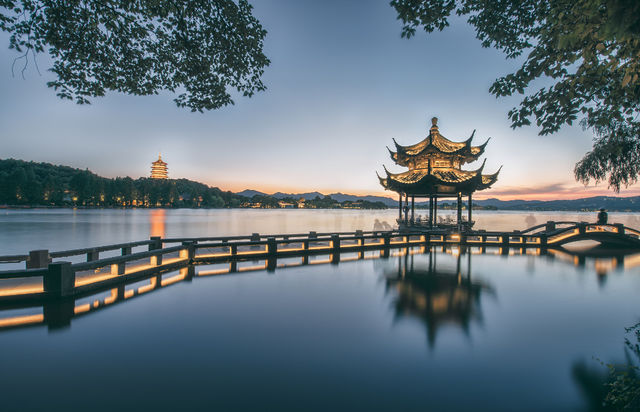
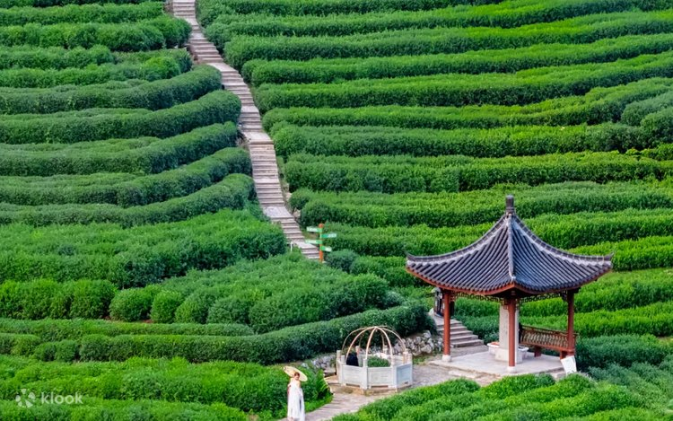
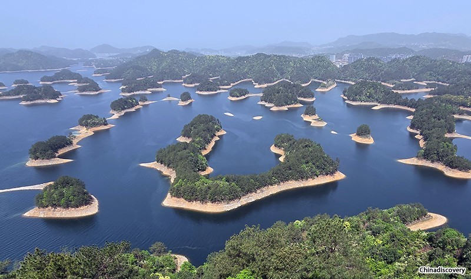

West Lake is Hangzhou’s soul—a 6.39-square-kilometer freshwater lake surrounded by hills, temples, and gardens. It’s been a UNESCO World Heritage Site since 2011, famous for its "Ten Scenic Views" (e.g., "Dawn on the Su Causeway in Spring," "Moon over the Peaceful Lake in Autumn") that capture its beauty in different seasons.The lake is crisscrossed by three causeways: Su Causeway (lined with willow trees and peach blossoms), Bai Causeway (a quiet path with views of distant hills), and Yang Causeway (known for its lotus flowers in summer). Boating is the best way to experience West Lake—you can choose a traditional rowboat (rowed by a local guide, who shares stories about the lake) or an electric boat (self-driven, for more flexibility). Key spots around the lake include Leifeng Pagoda (a rebuilt tower with lake views) and Three Pools Mirroring the Moon (a small island with stone pagodas that look like moons in the water at night).
Spring (March–April): Peach blossoms bloom on Su Causeway, 10°C–20°C.
Autumn (October–November): Clear skies, mild weather, and red leaves on nearby hills.
West Lake Scenic Area: Free entry (no charge to walk around the lake).
Rowboat Rental: 150 CNY/boat (1 hour, 2–4 people); electric boat: 200 CNY/boat (1 hour, 4 people).
Ferry to Three Pools Mirroring the Moon: 50 CNY/person (round-trip).

Longjing Village (Dragon Well Village) is a quiet mountain village 15 kilometers southwest of Hangzhou, famous for producing China’s most prestigious green tea—Longjing tea (Dragon Well tea). The village is surrounded by terraced tea plantations that cover the hillsides, with rows of tender tea shoots picked by local farmers (especially in spring).Walking through Longjing Village feels like stepping into a rural oasis: stone houses with black tiles line narrow lanes, and the air smells of fresh tea. Most families in the village run small tea houses where you can taste authentic Longjing tea (served in small porcelain cups) and learn about tea-making—from picking the shoots (only the top 1–2 leaves are used) to roasting the tea (done in iron pans over low heat). The best views of the plantations are from "Nine Streams and Eighteen Gullies" (a nearby hiking trail that winds through tea fields and bamboo forests).
Spring (March–April): Tea harvesting season—watch farmers pick tea shoots in the morning.
Autumn (September–October): Cool weather, fewer tourists, and tea plantations are still lush green.
Longjing Village & Tea Plantations: Free entry.
Tea Tasting: 30–50 CNY/person (includes 2–3 cups of Longjing tea and snacks like roasted peanuts).
Hiking Nine Streams and Eighteen Gullies: Free.

Qiandao Lake (Thousand Island Lake), 150 kilometers west of Hangzhou, is a man-made lake famous for its 1,078 islands and crystal-clear water. Created in the 1950s when the Xin’an River Dam was built, the lake’s water is so clean it’s drinkable—local saying goes, "Qiandao Lake’s water is clearer than a mirror."The lake’s islands vary in size and theme: Meifeng Island (the most popular, with a viewing platform that overlooks hundreds of islands), Bird Island (home to over 100 bird species), and Monkey Island (where you can feed wild macaques). The best way to explore is by taking a day cruise (most cruises visit 2–3 islands) with a guide who explains the lake’s history and ecology. In addition to island hopping, you can try water activities like kayaking (80 CNY/hour) or fishing (100 CNY/day—catch your own fish, and local restaurants will cook it for you).
Spring (April–May): Mild weather (15°C–22°C), and islands are covered in green vegetation.
Autumn (October–November): Cool (12°C–20°C), clear water, and fewer rain showers—ideal for cruising.
Day Cruise (including 2–3 islands): 150 CNY/adult; 75 CNY/students (includes lunch and ferry).
Kayak Rental: 80 CNY/hour; Fishing: 100 CNY/day.
Individual Island Entry: Included in the cruise ticket (no extra charge for Meifeng/Bird/Monkey Islands).